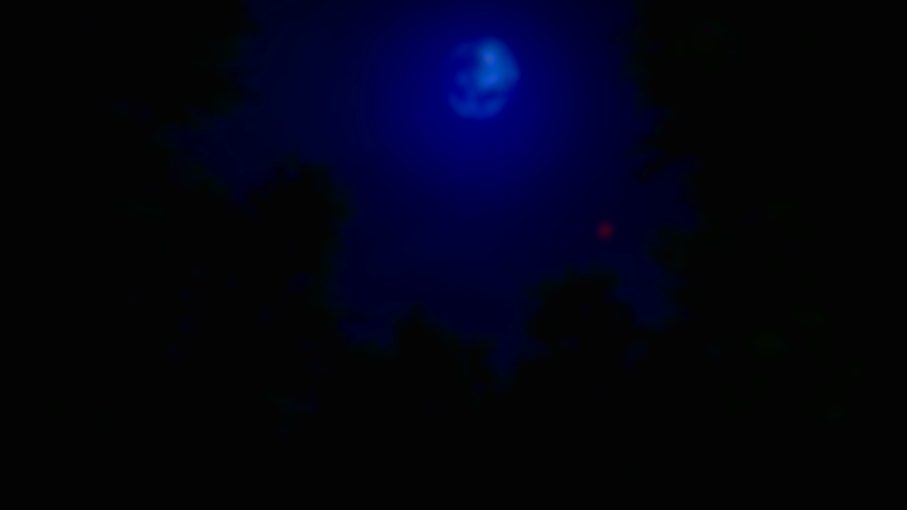

Strona główna
Witaj na stronie głównej projektu "Forest Nightmare"!

Coś o mnie:
Cześć! Jestem Adam i mam 15 lat. Od jakiegoś czasu tworzę projekt, pod nazwą Forest Nightmare. Jest to gra, i wiem że nie jest powalająca. Ale wciąż się uczę. Uwielbiam programowanie i nigdy z tego nie zrezygnuje.
Wiadomości
+ Zmieniono treść notatek na aktualniejszą
+ Dodano wyświetlanie statusu gry na discordzie
+ Dodano wyświetlanie przedmiotów z bazy danych w ekwipunku
+ Dodano protoyp zapisu i wczytywania gry
+ Zrobiono kopię zapasową na wypadek utraty danych
+ Zrobiono solidną zmianę targetu dla movementu przeciwnika
+ Zrobiono wyświetlanie notatek podczas gdy podejdziemy do nich
+/- Optymalizacja
+/- Przebudowa lasu, dodanie wieży oraz domku.
+/- Dodanie różnorodnych drzew do lasu.
+/- Zmiana wysokości terenu i ładniejsza trawa.
+/- Zmiana całkowicie modelu wroga oraz jego koncepcji. Zastąpiono klauna czymś w stylu człowieka bez twarzy.
+/- Wstęp do misji i dialogów. Stworzono skrypt odpowiadający za audio w dialogach, i skrypt z modularną pstą misji dostępnych w grze.
+ Dodano model gracza.
+ Dodano Animacje chodzenia, i jeden taniec na próbę dla modelu gracza.
+ Dodano ogrodzenie wśród lasu.
+ Dodano nieopodal lasu wioskę oraz ścieżkę do niej prowadzącą.
+ Dodano jedną cutscenkę do wioski.
+ Dodano menu główne wraz z muzyką.
+ Stworzono UI dla ekwipunku.
+ Dodano "Pause Menu"
+ Dodano HP dla gracza
+ Dodano ekran śmierci po tym gdy podejdziemy za bpsko wroga.
+ Rozbudowano teren i zablokowano wyjście poza określony obszar.
+ Dodano Sprint oraz Kucanie postaci.
- Usunięto kapsułę graczowi.
- Usunięto dźwięk "pozytywki" podczas gdy podejdziemy do wroga.
- Usunięto próbnego klauna, światło oraz lewitującą notatkę.
- Usunięto irytującą trawę.
- Usunięto duże skupiska drzew i zastąpiono je małymi, co pozytywnie wpłynęło na FPS-y.
+ Zmieniono treść notatek na aktualniejszą
+ Dodano wyświetlanie statusu gry na discordzie
+ Dodano wyświetlanie przedmiotów z bazy danych w ekwipunku
+ Dodano protoyp zapisu i wczytywania gry
+ Zrobiono kopię zapasową na wypadek utraty danych
+ Zrobiono solidną zmianę targetu dla movementu przeciwnika
+ Zrobiono wyświetlanie notatek podczas gdy podejdziemy do nich
O projekcie:
Projekt "Forest Nightmare", to "gra" która jest rozwijana przezemnie. Założeniem projektu było to, żeby się czegoś nauczyć, a nie żeby w tą grę ktoś na poważnie grał, sam do tego podchodzę jak do zwykłej nauki, i pewnie nie raz zagram w tą grę po prostu dla siebie, czy dla przyjemności. Gra jest oczywiście do pobrania, jednakże tak jak już pisałem wcześniej, jest to zwykły projekt więc proszę nie oczekiwać cudów. Tymbardziej że jak narazie nie mam doświadczenia komeryjnego jeśli chodzi o tworzenie gier.
